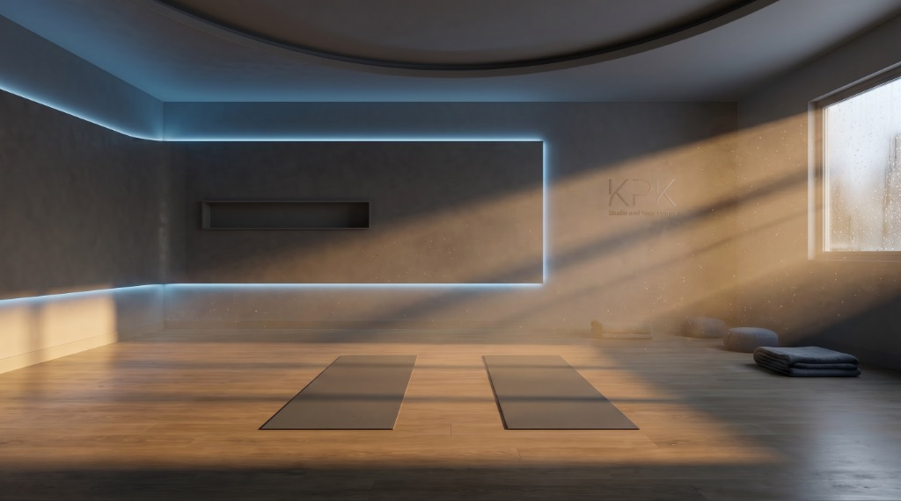

Master instructor. Chef. Mother.

With over 20 years of experience in both yoga and culinary arts, Karina is a bilingual native (English + Spanish) committed to the craft of living well.
Her teaching range is unusually wide—spanning kids, geriatric recovery, water yoga, and core yoga for athletes. This versatility comes from two decades of consistent practice, not generic platitudes.
"Every detail considered, no filler."
Refined, precise, and warm. She will correct your posture but never shame you. Her classes are a sanctuary grounded in the borderlands of Tijuana and San Diego.
Credentials
- 20+ Years Yoga Practice
- Master Yoga Instructor
- Professional Chef
- Bilingual Instruction (EN/ES)